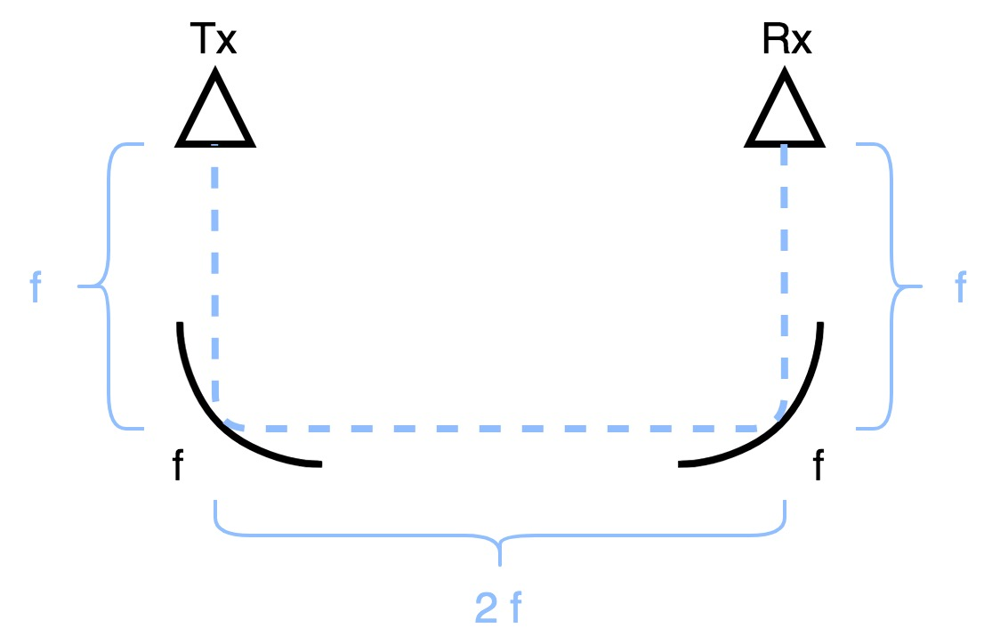
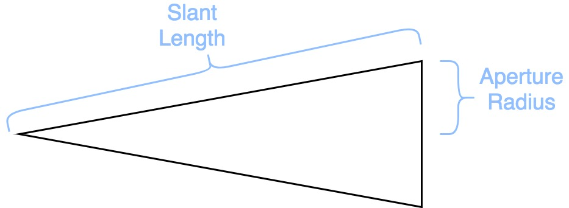
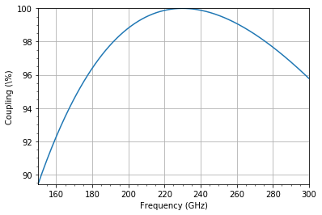
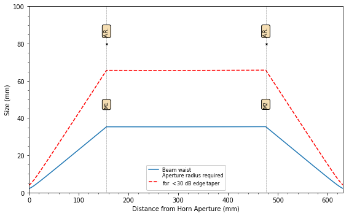

Gaussopt Example¶
- This example will walk through the basics of setting up a Gaussian telescope.
- Note: All distances are in mm and all frequencies are in GHz unless specified otherwise.
In [1]:
# Import the gaussopt package
from gaussopt import *
# Import modules for this notebook
import matplotlib.pyplot as plt
%matplotlib inline
from IPython.display import Image
- Gaussian telescopes use two mirrors to couple energy between two horn antennas. If the mirrors have focal lengths \(f\), then the mirrors should be separated by \(2f\) and the distance between each horn’s beam waist and it’s respective mirror should be \(f\).

title
Define frequency sweep¶
- The standard way to initialize this class is to define the start and end frequency.
- This class assumes GHz unless a unit is provided.
In [2]:
freq = Frequency(150, 300, comment='rf sweep')
Frequency sweep: rf sweep
f = 150.0 to 300.0 GHz, 301 pts
Define horns¶

title
In [3]:
slen = 22.64 # slant length (in mm)
arad = 3.6 # aperture radius (in mm)
hfac = 0.59 # horn factor
horn_tx = Horn(freq, slen, arad, hfac, comment='Trasmitting')
horn_rx = horn_tx.copy(comment='Receiving')
Horn: Trasmitting
slen = 22.64 mm
arad = 3.60 mm
hf = 0.59
Horn: Receiving
slen = 22.64 mm
arad = 3.60 mm
hf = 0.59
Define optical components¶
- These classes will assume mm unless a unit is provided.
In [4]:
d = Freespace(160)
m1 = Mirror(16, units='cm', radius=8, comment='M1')
m2 = Mirror(16, units='cm', radius=8, comment='M2')
Freespace:
d = 160.0 mm
Mirror: M1
f = 16.0 cm
Mirror: M2
f = 16.0 cm
- Note that the distance between the horn and the mirror needs to be reduced because the actual beam waist will be behind the horn aperture.
In [5]:
z_offset = horn_tx.z_offset(units='mm')[freq.idx(230)]
d_red = Freespace(160 - z_offset, comment='reduced')
Freespace: reduced
d = 155.8 mm
Build Optical System¶
In [6]:
component_list = (d_red, m1, d, d, m2, d_red)
system = System(horn_tx, component_list, horn_rx)
System:
[[-1. 0.00848684]
[ 0. -1. ]]
Plot Coupling¶
In [7]:
system.plot_coupling()
system.print_best_coupling()
Best coupling: 100.0 % at 230.0 GHz

Plot Beam Propagation¶
In [8]:
fig, ax = plt.subplots(figsize=(8,5))
system.plot_system(ax=ax)

In [ ]: